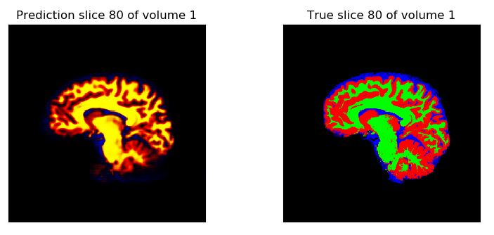
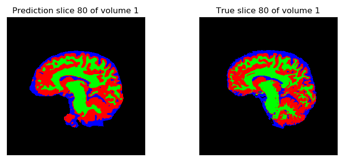

Het netwerk dat ik gebouwd heb, is een versie van het klassieke 2D U-net in [1], aangepast aan ons probleem. De implementatie van het originele netwerk uit het artikel is te vinden op GitHub. De auteurs pasten hun netwerk toe op het identificeren van het hersenvolume. Wij willen het echter gebruiken om hersenen te segmenteren in witte stof, grijze stof en CSF. Daarvoor zijn enkele aanpassingen van het netwerk nodig. Eerst en vooral werd de input laag aangepast zodat het nu 2D slices verwerkt van 256x256 pixels. De output van het originele netwerk is een kans van 0 tot 1 dat een bepaalde pixel behoort tot het hersenvolume. Wij willen echter elke pixel classificeren in grijze stof, witte stof, CSF of achtergrond. We veranderen daarom de output van het netwerk naar een array van 4 getallen voor elke pixel. Deze array geeft respectievelijk de kans dat de pixel achtergrond, grijze stof, witte stof of CSF is. De kansen die we op deze manier bekomen zijn continue waarden tussen 0 en 1. Een voorbeeld van deze continue segmentatie staat hieronder voor slice 80 van volume 1. Rood is grijze stof, groen is witte stof en blauw is CSF.
Om deze continue waarden om te zetten in een discrete voorspelling voor elke pixel is een discretisatie algoritme nodig. Het is niet triviaal om dit algoritme op te stellen. Intuïtief zou je een pixel indelen in de klasse waarvoor de kans maximaal is. Er blijkt echter dat deze naïeve manier leidt tot zwakke resultaten. We zien bijvoorbeeld dat we steeds geel krijgen op de continue segmentatie op de plekken waar SPM witte stof voorspelt. Ons netwerk voorspelt dus dat de pixel een hoge kans heeft om witte stof én grijze stof te zijn. We kunnen dit echter verhelpen door een geschikt discretisatie algoritme te kiezen. Dit algoritme is empirisch opgesteld en ziet eruit als volgt:
1. Als de kans op achtergrond groter is dan de som van de andere kansen, dan is de pixel background.
2. Als de pixel een kans heeft groter dan 0.5 om witte materie te zijn en het is geen background, dan is het witte materie.
3. Als de kans op CSF groter is dan die voor witte materie of grijze materie, en het is geen background, dan is het CSF.
4. Als geen van bovenstaande waar is, dan is het grijze materie.
Deze regels zijn empirisch opgesteld en zo gekozen omdat ze leiden tot goede resultaten. In verder onderzoek kan dit discretisatie algoritme zo gekozen worden dat de dice scores maximaal zijn. Je kan dan te testbeelden gebruiken om te bepalen welk discretisatie algoritme de beste resultaten geeft. Zo wordt optimaal gebruik gemaakt van alle informatie die de continue segmentie geeft. Uiteindelijk werden beelden verkregen zoals op de afbeelding hieronder.
Er is te zien dat de discrete segmentatie een plek grijze stof voorspelt op een plek waar SPM enkel achtergrond aangeeft. Op de continue segmentatie is te zien dat hier de kans op grijze stof eerder klein is. Een ander discretitie algoritme met andere criteria voor grijze stof zou ervoor kunnen zorgen dat deze pixels niet als grijze stof gesegmenteerd worden. Dit heeft natuurlijk ook invloed op de segmentatie van andere pixels en kan de segmentatie mogelijk net nog slechter maken. We kunnen besluiten dat het opstellen van een geschikt discretisatie algoritme een niet triviaal probleem is.
De output van het netwerk is niet het enige wat veranderd is in mijn netwerk. Ook de verliesfunctie is veranderd ten opzichte van de originele implementatie. In het artikel wordt binary cross entropy als verliesfunctie gebruikt, wij gebruiken cross entropy, omdat we willen classificeren in 4 klassen. Het verschil tussen de twee verliesfuncties is dat de eerste geoptimaliseerd is voor een binaire classificatie. Verder werd in de originele implementatie een Adam optimizer gebruikt voor de gradient descent, met een learning rate van $10^{-5}$. In ons model gebruiken we nog steeds een Adam optimizer, maar dan met een learning rate van $10^{-4}$, zo wordt het netwerk sneller getraind.
Het netwerk werd getraind op 5 beelden gedurende 50 epochs. De training duurde 5u40 op de laptop van Maarten. De resultaten zijn gegeven als html-versie van een jupyter-notebook en vindt u hier.
[1] Kolařík, M., Burget, R., Uher, V., Říha, K., & Dutta, M. K. (2019). Optimized High Resolution 3D Dense-U-Net Network for Brain and Spine Segmentation. Applied Sciences, 9(3), vol. 9, no. 3 (link).